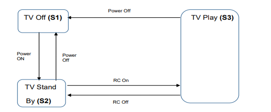
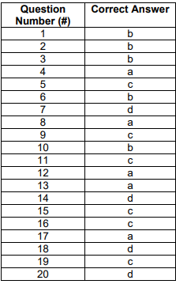

Test Bank on lectures 3,4,5
1. Which one of the following answers describes a test condition?
- a) A distinguishing characteristic of a component or system
- b) A testable aspect of a component or system identified as a basis for testing
- c) The degree to which a software product provides functions which meet stated and implied needs when the software is used under specified conditions
- d) Test cases designed to execute combinations of conditions and actions resulting from them
2. Which of the following statements is a valid objective for testing?
- a) The test should start as late as possible so that development had enough time to create a good product
- b) To validate whether the test object works as expected by the users and other stakeholders
- c) To prove that all possible defects are identified
- d) To prove that any remaining defects will not cause any failures
3. Which of the following statements correctly describes the difference between testing and debugging?
- a) Testing identifies the source of defects; debugging analyzes the defects and proposes prevention activities
- b) Dynamic testing shows failures caused by defects; debugging eliminates the defects, which
- are the source of failures
- c) Testing removes faults; but debugging removes defects that cause the faults
- d) Dynamic testing prevents the causes of failures; debugging removes the failures
4. Which one of the statements below describes the most common situation for a failure discovered during testing or in production?
- a) The product crashed when the user selected an option in a dialog box
- b) The wrong version of a compiled source code file was included in the build
- c) The computation algorithm used the wrong input variables
- d) The developer misinterpreted the requirement for the algorithm
5. Mr. Test has been testing software applications on mobile devices for a period of 5 years. He has a wealth of experience in testing mobile applications and achieves better results in a shorter time than others. Over several months, Mr. Test did not modify the existing automated test cases and did not create any new test cases. This leads to fewer and fewer defects being found by executing the tests. What principle of testing did Mr. Test not observe?
- a) Testing depends on the environment
- b) Exhaustive testing is not possible
- c) Repeating of same tests will not find new defects
- d) Defects cluster together
6. In what way can testing be part of Quality Assurance?
- a) It ensures that requirements are detailed enough
- b) Testing reduces the risk of poor software quality
- c) It ensures that standards in the organization are followed
- d) It measures the quality of software in terms of number of executed test cases
7. Which of the following activities is part of the main activity "test analysis" in the test process?
- a) Identifying any required infrastructure and tools
- b) Creating test suites from test scripts
- c) Analyzing lessons learned for process improvement
- d) Evaluating the test basis for testability
8. Match the following test work products (1-4) with the right description (A-D).
- Test suite
- Test case
- Test script
- Test charter
- A. A set of test scripts to be executed in a specific test run
- B. A set of instructions for the execution of a test
- C. Contains expected results
- D. Documentation of test activities in session-based exploratory testing
- a) 1A, 2C, 3B, 4D
- b) 1D, 2B, 3A, 4C
- c) 1A, 2C, 3D, 4B
- d) 1D, 2C, 3B, 4A
9. How can white-box testing be applied during user acceptance testing?
- a) To check if large volumes of data can be transferred between integrated systems
- b) To check if all code statements and code decision paths have been executed
- c) To check if all work process flows have been covered
- d) To cover all web page navigations
10. Which of the following statements comparing component testing and system testing is TRUE?
- a) Component testing verifies the functionality of software modules, program objects, and classes that are separately testable, whereas system testing verifies interfaces between components and interactions between different parts of the system
- b) Test cases for component testing are usually derived from component specifications, design specifications, or data models, whereas test cases for system testing are usually derived from requirement specifications or use cases
- c) Component testing only focuses on functional characteristics, whereas system testing focuses on functional and non-functional characteristics
- d) Component testing is the responsibility of the testers, whereas system testing typically is the responsibility of the users of the system
11. Which one of the following is TRUE?
- a) The purpose of regression testing is to check if the correction has been successfully implemented, while the purpose of confirmation testing is to confirm that the correction has no side effects
- b) The purpose of regression testing is to detect unintended side effects, while the purpose of confirmation testing is to check if the system is still working in a new environment
- c) The purpose of regression testing is to detect unintended side effects, while the purpose of confirmation testing is to check if the original defect has been fixed
- d) The purpose of regression testing is to check if the new functionality is working, while the purpose of confirmation testing is to check if the original defect has been fixed
12. Which one of the following is the BEST definition of an incremental development model?
- a) Defining requirements, designing software and testing are done in phases where in each phase a piece of the system is added
- b) A phase in the development process should begin when the previous phase is complete
- c) Testing is viewed as a separate phase which takes place after development has been completed
- d) Testing is added to development as an increment
13. Which of the following should NOT be a trigger for maintenance testing?
- a) Decision to test the maintainability of the software
- b) Decision to test the system after migration to a new operating platform
- c) Decision to test if archived data is possible to be retrieved
- d) Decision to test after “hot fixes”
14. Which of the following options are roles in a formal review?
- a) Developer, Moderator, Review leader, Reviewer, Tester
- b) Author, Moderator, Manager, Reviewer, Developer
- c) Author, Manager, Review leader, Reviewer, Designer
- d) Author, Moderator, Review leader, Reviewer, Scribe
15. Which activities are carried out within the planning of a formal review?
- a) Collection of metrics for the evaluation of the effectiveness of the review
- b) Answer any questions the participants may have
- c) Definition and Verification of fulfillment of entry criteria for the review
- d) Evaluation of the review findings against the exit criteria
16. Which of the review types below is the BEST option to choose when the review must follow a formal process based on rules and checklists?
- a) Informal Review
- b) Technical Review
- c) Inspection
- d) Walkthrough
17. Which of the following statements about static testing are MOST true?
- a) Static testing is a cheap way to detect and remove defects
- b) Static testing makes dynamic testing less challenging
- c) Static testing makes it possible to find run-time problems early in the lifecycle
- d) When testing safety-critical system, static testing has less value because dynamic testing finds the defects better
18. You will be invited to a review. The work product to be reviewed is a description of the in-house document creation process. The aim of the description is to present the work distribution between the different roles involved in the process in a way that can be clearly understood by everyone. You will be invited to a checklist-based review. The checklist will also be sent to you. It includes the following points:
- i. Is the person who performs the activity clearly identified for each activity?
- ii. Are the entry criteria clearly defined for each activity?
- iii. Are the exit criteria clearly defined for each activity?
- iv. Are the supporting roles and their scope of work clearly defined for each activity?
In the following we show an excerpt of the work result to be reviewed, for which you should use the checklist above:
"After checking the customer documentation for completeness and correctness, the software architect creates the system specification. Once the software architect has completed the system specification, he invites testers and verifiers to the review. A checklist describes the scope of the review. Each invited reviewer creates review comments - if necessary - and concludes the review with an official review done-comment."
Which of the following statements about your review is correct?
- a) Point ii) of the checklist has been violated because it is not clear which condition must be fulfilled to invite to the review
- b) You notice that in addition to the tester and the verifier, the validator must also be invited. Since this item is not part of your checklist, you do not create a corresponding comment
- c) Point iii) of the checklist has been violated as it is not clear what marks the review as completed
- d) Point i) of the checklist has been violated because it is not clear who is providing the checklist for the invitation to the review
19. What is checklist-based testing?
- a) A test technique in which tests are derived based on the tester's knowledge of past faults, or general knowledge of failures
- b) A test technique based on an analysis of the specification of a component or system
- c) An experience-based test technique whereby the experienced tester uses a list of items to be noted, checked, or remembered, or a set of rules or criteria against which a product must be verified
- d) An approach to testing where the testers dynamically design and execute tests based on their knowledge, exploration of the test item and the results of previous tests
20. Which one of the following options is categorized as a black-box test technique?
- a) A technique based on analysis of the architecture
- b) A technique checking that the test object is working according to the detailed design
- c) A technique based on the knowledge of past faults, or general knowledge of failures
- d) A technique based on formal requirements
21. The following statement refers to decision coverage:
“When the code contains only a single ‘if’ statement and no loops or CASE statements, and its execution is not nested within the test, any single test case we run will result in 50% decision coverage.”
Which of the following statement is correct?
- a) The statement is true. Any single test case provides 100% statement coverage and therefore 50% decision coverage
- b) The statement is true. Any single test case would cause the outcome of the “if” statement to be either true or false
- c) The statement is false. A single test case can only guarantee 25% decision coverage in this case
- d) The statement is false. The statement is too broad. It may be correct or not, depending on the tested software
22. Which one of the following is the description of statement coverage?
- a) It is a metric, which is the percentage of test cases that have been executed
- b) It is a metric, which is the percentage of statements in the source code that have been executed
- c) It is a metric, which is the number of statements in the source code that have been executed by test cases that are passed
- d) It is a metric, that gives a true/false confirmation if all statements are covered or not
23. Which statement about the relationship between statement coverage and decision coverage is true?
- a) 100% decision coverage also guarantees 100% statement coverage
- b) 100% statement coverage also guarantees 100% decision coverage
- c) 50% decision coverage also guarantees 50% statement coverage
- d) Decision coverage can never reach 100%
24. For which of the following situations is exploratory testing suitable?
- a) When time pressure requires speeding up the execution of tests already specified
- b) When the system is developed incrementally, and no test charter is available
- c) When testers are available who have enough knowledge of similar applications and technologies
- d) When an advanced knowledge of the system already exists, and evidence is to be if it should be tested intensively
25. An employee’s bonus is to be calculated. It cannot be negative, but it can be calculated down to zero. The bonus is based on the length of employment:
- Less than or equal to 2 years
- More than 2 years but less than 5 years
- 5 to 10 years inclusively
- Longer than 10 years
What is the minimum number of test cases required to cover all valid equivalence partitions for calculating the bonus?
- a) 3
- b) 5
- c) 2
- d) 4
26. A speed control and reporting system has the following characteristics:
- If you drive 50 km/h or less, nothing will happen.
- If you drive faster than 50 km/h, but no more than 55 km/h, you will be warned.
- If you drive faster than 55 km/h but not more than 60 km/h, you will be fined.
- If you drive faster than 60 km/h, your driving license will be suspended.
- The speed in km/h is available to the system as an integer value.
Which would be the most likely set of values (km/h) identified by applying the boundary value analysis, where only the values on the boundaries of the equivalence classes are selected?
- a) 0, 49, 50, 54, 59, 60
- b) 50, 55, 60
- c) 49, 50, 54, 55, 60, 62
- d) 50, 51, 55, 56, 60, 61
27. A company's employees are paid bonuses if they work more than a year in the company and achieve a target which is individually agreed before.
These facts can be shown in a decision table:
| Test-ID | T1 | T2 | T3 | T4 | |
|---|---|---|---|---|---|
| Condition1 | Employment for more than 1 year? | YES | NO | NO | YES |
| Condition2 | Agreed target? | NO | NO | YES | YES |
| Condition3 | Achieved target? | NO | NO | YES | YES |
| Action | Bonus payment | NO | NO | NO | YES |
Which of the following test cases represents a situation that can happen in real life, and is missing in the above decision table?
- a) Condition1 = YES, Condition2 = NO, Condition3 = YES, Action= NO
- b) Condition1 = YES, Condition2 = YES, Condition3 = NO, Action= YES
- c) Condition1 = NO, Condition2 = NO, Condition3 = YES, Action= NO
- d) Condition1 = NO, Condition2 = YES, Condition3 = NO, Action= NO
28. Which of the following statements about the given state transition diagram and table of test cases is TRUE?

| Test Case | 1 | 2 | 3 | 4 | 5 |
|---|---|---|---|---|---|
| Start State | S1 | S2 | S2 | S3 | S3 |
| Input | Power On | Power Off | RC On | RC Off | Power Off |
| Expected Final State | S2 | S1 | S3 | S2 | S1 |
- a) The given test cases cover both valid and invalid transitions in the state transition diagram
- b) The given test cases represent all possible valid transitions in the state transition diagram
- c) The given test cases represent some of the valid transitions in the state transition diagram
- d) The given test cases represent pairs of transitions in the state transition diagram
29. A video application has the following requirement: The application shall allow playing a video on the following display resolution:
- 640x480
- 1280x720
- 1600x1200
- 1920x1080
Which of the following list of test cases is a result of applying the equivalence partitioning test technique to test this requirement?
- a) Verify that the application can play a video on a display of size 1920x1080 (1 test case)
- b) Verify that the application can play a video on a display of size 640x480 and 1920x1080 (2 test cases)
- c) Verify that the application can play a video on each of the display sizes in the requirement (4 test cases)
- d) Verify that the application can play a video on any one of the display sizes in the requirement (1 test case)
30. Which of the following statements BEST describes how tasks are divided between the test manager and the tester?
- a) The test manager plans testing activities and chooses the standards to be followed, while the tester chooses the tools and set the tools usage guidelines
- b) The test manager plans, coordinates, and controls the testing activities, while the tester automates the tests
- c) The test manager plans, monitors, and controls the testing activities, while the tester designs tests and decides on the release of the test object
- d) The test manager plans and organizes the testing and specifies the test cases, while the tester executes the tests
31. Which of the following metrics would be MOST useful to monitor during test execution?
- a) Percentage of executed test cases
- b) Average number of testers involved in the test execution
- c) Coverage of requirements by source code
- d) Percentage of test cases already created and reviewed
32. Which of the following can affect and be part of the (initial) test planning?
- a) Budget limitations
- b) Test log
- c) Failure rate
- d) Use cases
33. Which of the following lists contains only typical exit criteria from testing?
- a) Reliability measures, test coverage, schedule and status about fixing defect and remaining risks
- b) Reliability measures, test coverage, degree of tester’s independence and product completeness
- c) Reliability measures, test coverage, test cost, availability of test environment, time to market and product completeness
- d) Time to market, remaining defects, tester qualification, availability of testable use cases, test coverage and test cost
34. Which one of the following is NOT included in a test summary report?
- a) Defining pass/fail criteria and objectives of testing
- b) Deviations from the test approach
- c) Measurements of actual progress against exit criteria
- d) Evaluation of the quality of the test object
35. The project develops a "smart" heating thermostat. The control algorithms of the thermostat were modeled as Matlab/Simulink models and run on the internet connected server. The thermostat uses the specifications of the server to trigger the heating valves.
The test manager has defined the following test strategy/approach in the test plan:
- The acceptance test for the whole system is executed as an experience-based test.
- The control algorithms on the server are checked against standard of the energy saving regulation.
- The functional test of the thermostat is performed as risk-based testing.
- The security tests of data / communication via the internet are executed together with external security experts.
What four common types of test strategies/approaches did the test manager implement in the test plan?
- a) Methodical, analytical, reactive, and regression-averse
- b) Analytical, standard-compliant, consultative, and reactive
- c) Model-based, methodical, analytical, and consultative
- d) Regression-averse, consultative, reactive, and methodical
36. Which one of the following is the characteristic of a metrics-based approach for test estimation?
- a) Budget which was used by a previous similar test project
- b) Overall experience collected in interviews with test managers
- c) Estimation of effort for test automation agreed in the test team
- d) Average of calculations collected from business experts
37. As a test manager you are responsible for testing the following parts of requirements:
- R1 - Process anomalies
- R2 - Synchronization
- R3 - Approval
- R4 - Problem solving
- R5 - Financial data
- R6 - Diagram data
- R7 - Changes to the user profile
Notation: Logical requirement dependencies (A -> B means, that B depends on A):

Which one of the following options structures the test execution schedule according to the requirement dependencies?
- a) R1 ; R3 ; R4 ; R7 ; R2 ; R5 ; R6
- b) R1 ; R3 ; R2 ; R4 ; R7 ; R5 ; R6
- c) R1 ; R3 ; R2 ; R5 ; R6 ; R4 ; R7
- d) R1 ; R2 ; R5 ; R6 ; R3 ; R4 ; R7
38. You are testing a new version of software for a coffee machine. The machine can prepare different types of coffee based on four categories. i.e., coffee size, sugar, milk, and syrup. The criteria are as follows:
- Coffee size (small, medium, large)
- Sugar (none, 1 unit, 2 units, 3 units, 4 units)
- Milk (yes or no)
- Coffee flavor syrup (no syrup, caramel, hazelnut, vanilla)
Now you are writing a defect report with the following information:
- Title: Low coffee temperature.
- Short summary: When you select coffee with milk, the time for preparing coffee is too long and the temperature of the beverage is too low (less than 40 °C).
- Expected result: The temperature of coffee should be standard (about 75 °C).
- Degree of risk: Medium
- Priority: Normal
What valuable information was omitted in the above defect report?
- a) The actual test results
- b) Identification of the tested software version
- c) Status of the defect
- d) Ideas for improving the test case
39. Which one of the following is MOST likely to be a benefit of test execution tools?
- a) It is easy to create regression tests
- b) It is easy to maintain version control of test assets
- c) It is easy to design tests for security testing
- d) It is easy to run regression tests
40. Which one of the following test tools is mostly suitable for developers rather than testers?
- a) Requirement management tools
- b) Configuration management tools
- c) Static analysis tools
- d) Performance testing tools
Answers
